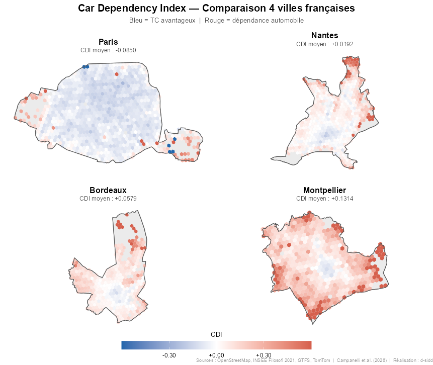

D-SIDD, Données du sens
Dépendance à la voiture : que dit le Car Dependency Index pour Montpellier ?
Un article de recherche récent a retenu notre attention : arxiv.org/abs/2604.01019. Les auteurs y proposent un indicateur composite — le Car Dependency Index (CDI) — permettant de déterminer, pour chaque habitant d’une zone de 200 m × 200 m, si l’utilisation de la voiture est préférable à celle des transports en commun pour accéder à un ensemble de services : santé, éducation, alimentation, banque, etc.
La préférence se mesure ici uniquement par rapport au temps de trajet. C’est un angle volontairement restreint — le coût, le confort ou l’empreinte carbone ne sont pas pris en compte — mais il offre une base objective et reproductible. L’étude couvre 18 villes d’Europe et d’Amérique du Nord, dont trois françaises : Paris, Bordeaux et Nantes.
Le CDI : comment ça marche ?
Principe général
Pour chaque carreau de 200 m de côté, on calcule — pour chaque type de service — le ratio entre le temps d’accès en transports en commun et le temps d’accès en voiture. Un ratio supérieur à 1 signifie que la voiture est plus rapide ; inférieur à 1, que les TC sont compétitifs.
Le CDI agrège ces ratios sur l’ensemble des services et des habitants d’une ville. Sa lecture est la suivante :
CDI < 0 — Plus de 50 % des habitants ont un avantage à utiliser les transports en commun (médiane favorable aux TC).
CDI = 0 — Situation d’équilibre : la moitié de la population accède aux services aussi vite en TC qu’en voiture.
CDI > 0 — Moins de 50 % des habitants ont un avantage avec les TC ; la voiture reste dominante pour la majorité.
Données mobilisées
Les calculs s’appuient sur quatre types de sources :
Réseau TC — données GTFS (General Transit Feed Specification) des opérateurs locaux
Réseau routier — OpenStreetMap (OSM)
Congestion — Tomtom
Localisation des services — OpenStreetMap (POI : santé, éducation, alimentation, banque…)
Population — données carroyées INSEE (200 m) pour les villes françaises (Filosofi)
Les temps de trajet en TC intègrent les temps d’attente et de correspondance, calculés via un algorithme de routage multimodal. Les temps voiture sont estimés à partir des vitesses moyennes par type de voie OSM.
Les résultats de l’étude
Parmi les 18 villes étudiées, Paris intra-muros se distingue nettement avec le seul CDI négatif du classement :
| Rang | Ville | CDI |
|---|---|---|
| 1 | Paris (Municipalité) | -0.111 |
| 2 | Zurich | -0.020 |
| 3 | Nantes | 0.013 |
| 4 | Bordeaux | 0.053 |
| 5 | Milan | 0.063 |
| 6 | Barcelone | 0.087 |
| 7 | Porto | 0.091 |
| 8 | Stockholm | 0.094 |
| 9 | Munich | 0.102 |
| 10 | Valence | 0.102 |
| 11 | Vienne | 0.129 |
| 12 | Paris (Métropole du Grand Paris) | 0.166 |
| 13 | Seattle | 0.188 |
| 14 | Berlin | 0.195 |
| 15 | Karlsruhe | 0.202 |
| 16 | New York | 0.241 |
| 17 | Chicago | 0.270 |
| 18 | Malaga | 0.310 |
| 19 | Rome | 0.335 |
Application à Montpellier
Validation de l’approche
Avant d’appliquer la méthodologie à Montpellier, nous avons recalculé le CDI des trois villes françaises de l’étude (Paris, Nantes et Bordeaux) afin de vérifier la cohérence de nos traitements avec ceux des auteurs. Les écarts observés sont faibles, ce qui valide l’approche.
| Rang étude | Ville | CDI étude | CDI recalculé |
|---|---|---|---|
| 1 | Paris (Municipalité) | -0,111 | — |
| 3 | Nantes | 0,013 | 0,019 |
| 4 | Bordeaux | 0,053 | 0,058 |
| — | Montpellier | — | 0,131 |
Résultat
Avec un CDI de 0,131, Montpellier se situerait, dans le classement de l’étude, entre Vienne (0,129) et le Grand Paris (0,166).

Concrètement, 11,5 % de la population montpelliéraine réside dans des zones où les transports en commun offrent un temps d’accès aux services comparable ou inférieur à celui de la voiture.
À titre de comparaison :
21,7 % à Bordeaux
38,5 % à Nantes
95,3 % à Paris intra-muros
Dans un contexte économique incertain, l’amélioration de l’accessibilité en transports en commun représente une réponse collective à la maîtrise du budget transport des ménages. Pour Montpellier, la marge de progression semble réelle.
Perspectives
La suite : le vélo
La prochaine étape de ce travail consiste à intégrer les modes actifs — et notamment le vélo — dans le calcul d’accessibilité. L’essor des vélos à assistance électrique et le développement des infrastructures cyclables modifient significativement les temps d’accès pour un nombre croissant de services et d’habitants.
Autres leviers d’action
L’amélioration de l’accessibilité via les TC n’est pas le seul axe possible. Deux autres leviers méritent attention :
Rapprocher les services de la population — localisation des équipements publics et privés dans les zones sous-desservies.
Développer les solutions cyclables — pistes protégées, stationnement sécurisé, intermodalité TC/vélo.
Ces trois axes — TC, localisation des services, vélo — peuvent être évalués et comparés avec le même cadre analytique que celui utilisé ici.
Sources
Article de référence : arxiv.org/abs/2604.01019
Données TC : GTFS Transports de l’Agglomération de Montpellier (TAM) — transport.data.gouv.fr
Réseau routier & services (POI) : OpenStreetMap contributors
Population : INSEE — Données carroyées 200 m (Filosofi)
Code source : disponible sur GitHub